Editing a Customer Database¶
This example is intended to show how DataLinq data from a database can be displayed and edited. A simple table with name and address will serve as the example. The data is located in a Postgres database.
Data Model¶
In addition to a unique ID id, the customers table has one field each for the name name
and for the address address:
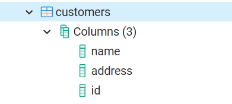
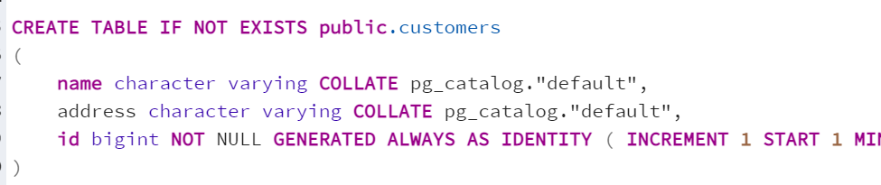
Creating an Endpoint¶
The first step is to create an endpoint (e.g. edit_customers). Database is set as the
connection type, and the connection string to the Postgres database is specified.
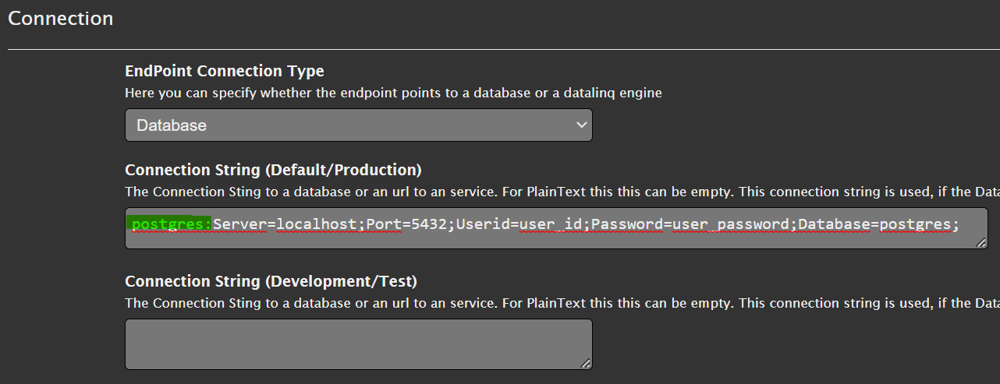
Note
The postgres: prefix at the beginning of the connection string is important. This tells DataLinq
that it is a Postgres database. Other prefixes are, for example, SQL:
for SQL Server databases, Oracle: for Oracle databases, or sqlite: for file-based
SQLite databases.
Creating Queries¶
The next step is to create a query that provides the customer data, e.g. select_customers:
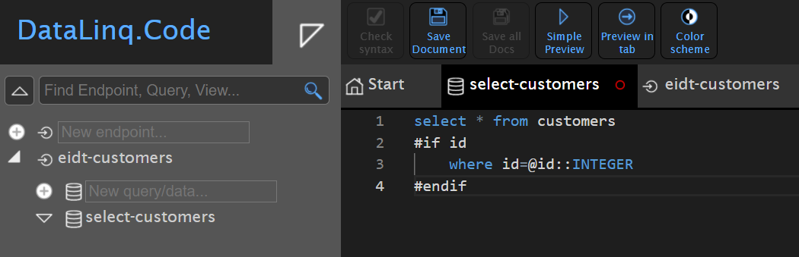
The query is a simple SQL statement Select * from customers. In addition, an
optional restriction on the id field was introduced here:
The line where id=@id is only added to the query if the id parameter is passed
via the URL. This value is then passed via the SQL parameter @id.
If there is already data in the database and you run the query, the data should be displayed:
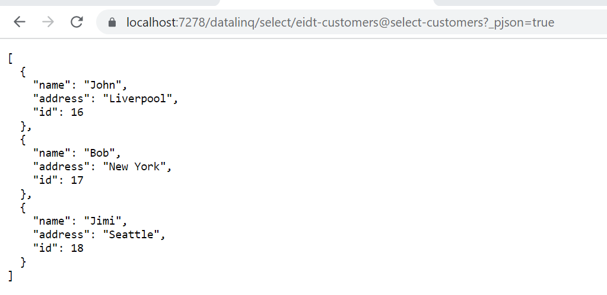
For testing, you can also try passing the id as a URL parameter:
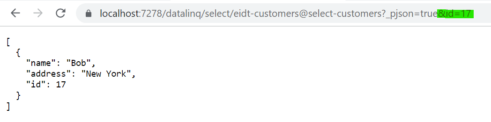
In the next step, queries can be created for creating (add_customer), editing (edit_customer),
and deleting (del_customer). These are not queries with SELECT,
but general SQL statements. These can later be triggered via buttons in our viewer:
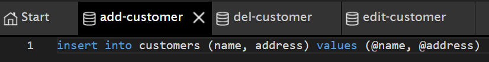
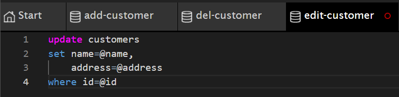
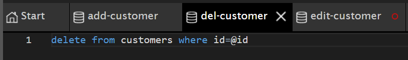
Creating Views¶
All views are created under the select_customers query.
The view that should show a list of all customers can, for example, be called all-customers.
Compared to the Hello World example, the table here is not simply shown via the DataLinqHelper
method Table(), but by iterating over the individual records of the database table:
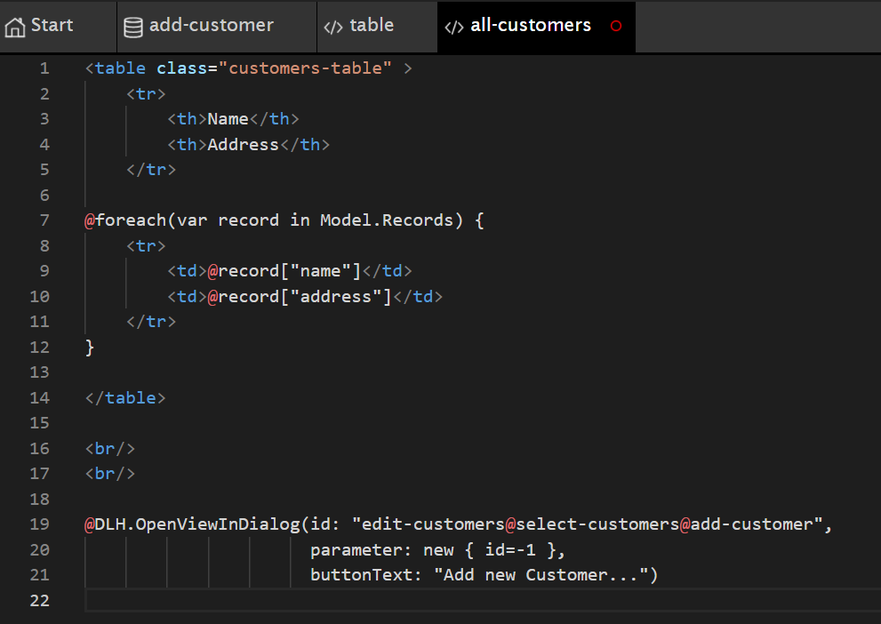
Below the HTML table, a button is inserted via the DataLinqHelper method OpenViewInDialog,
which shows a dialog with a view for creating a new customer. The result of this view
should look as follows:
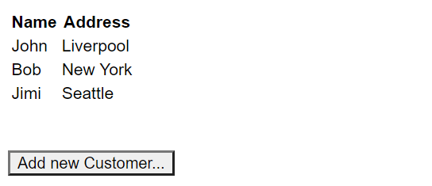
Note
No styling has been done yet here. However, the <table> has already been given the CSS class customers-table.
How to create individual styles for an endpoint is shown further below.
The button below the table already works and opens a dialog with an error message
stating that the view add-customer does not yet exist under the query select-customer.
To fix the error, we create this view as follows:
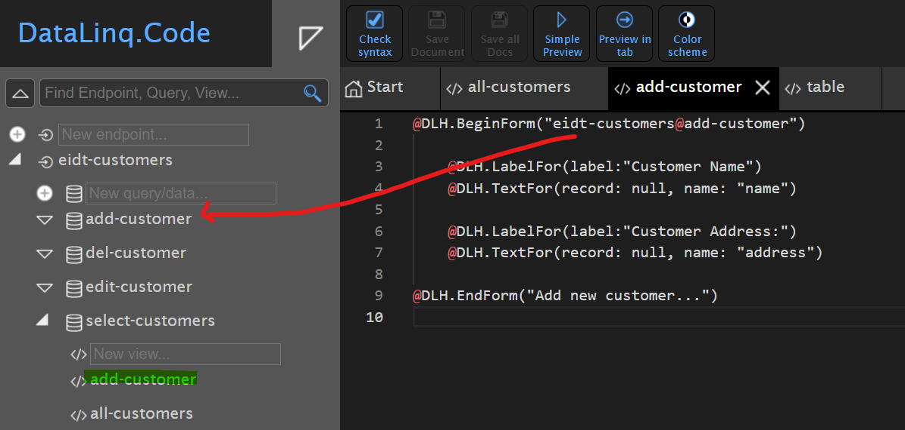
Here, @DLH.BeginForm("...") creates an HTML form. The route to a
query is given as the argument. In this case, edit-customers@add-customer with the SQL INSERT statement.
Then the fields that can be filled in are specified. For this, a label is always specified first with @DLH.LabelFor(),
and an input text field with @DLH.TextFor(). This method must be given a record
and the name of the field. In our case, the record is only created afterwards, so null is
specified here. It is important that name: specifies the name of the database field into which
the value from the input text field should be inserted.
The form is closed with @DLH.EndForm("Button Text"). This shows a button with
which the form can be submitted.
If you now click the Add new customer.. button, the dialog should appear and values can be entered:
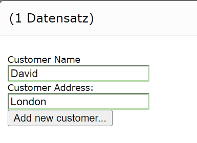
If you confirm the dialog with Add new customer, the dialog closes and the new customer is added to the
database. The new customer is shown immediately in the list.
In the next step, existing customers should be editable or deletable. To do this, the table
in our all-customers view must first be adjusted. Two columns, each with a
Update and Delete button, are inserted in each row. The result looks, for example, as follows:
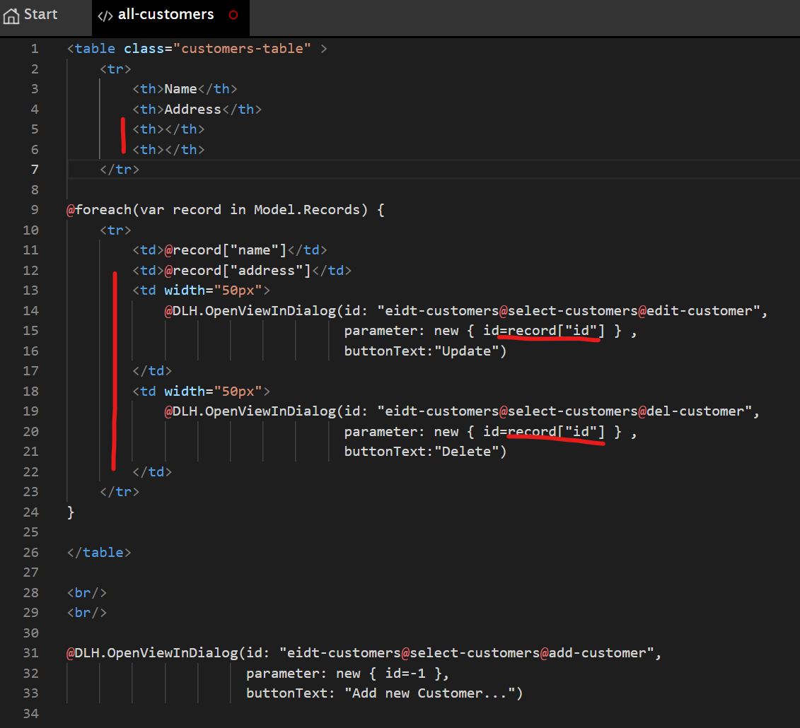
The buttons show views in a new dialog. The ID
of the respective record is also passed as an argument (parameter: new { id=record["id"] }).
If you start the preview, the table should now look like this:
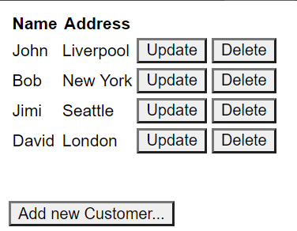
The buttons already open a new dialog with an error message, because the corresponding views do not yet exist.
In the next step, the views edit-customer and del-customer are created under select-customers.
The finished edit-customer view should look like this:
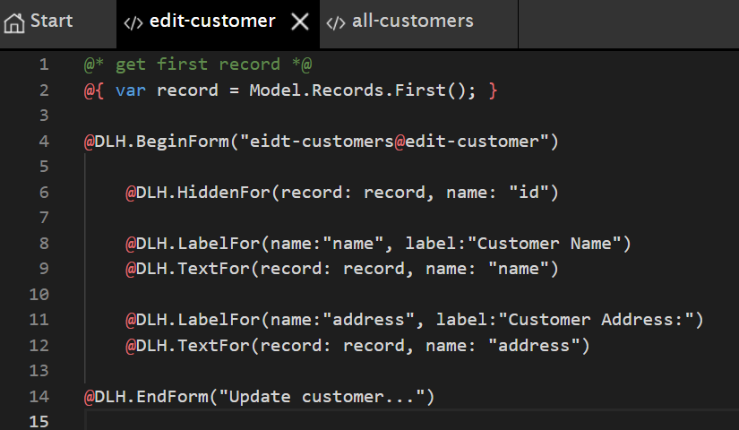
When this view is called, the ID of the desired record is passed to the underlying
select-customers query. The record is located in Model.Records. At the beginning of the
script, this record is assigned to the variable record using Model.Records.First() (First:
the first and, here, only record).
This record is then passed to @DLH.TextFor() in the form. This fills the input text field
directly with the corresponding values.
Since the edit-customer query needs the ID of the record for the UPDATE statement, this
field must also be included in the form. However, since the user should not see (or need) this field,
it is inserted into the form as a hidden field: @DLH.HiddenFor(record: record, name: "id").
The finished form then looks like this in the preview:
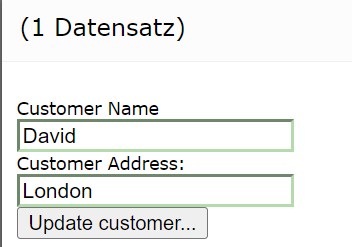
If you confirm this dialog, the record should be changed. However, database errors can also be shown here:
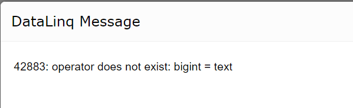
This happens because the ID in the database is of type bigint, while a string is
passed as the parameter. The reason is that DataLinq passes all parameters via URL parameters, and these are always interpreted as
strings. If the database system cannot or does not automatically convert this,
it must be done in the SQL statement. So if this error occurs (database-dependent), the
SQL statements for UPDATE and DELETE can be adjusted as follows (here for PostgreSQL):
update customers
set name=@name,
address=@address
where id=@id::INTEGER
delete from customers where id=@id::INTEGER
The finished view for del-customer looks like this:
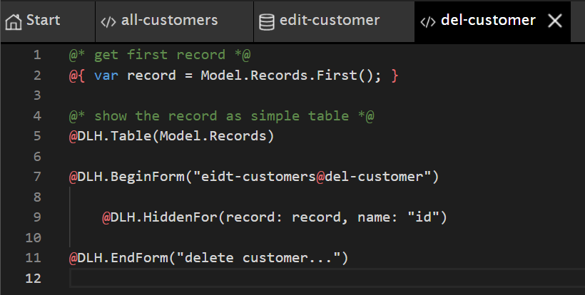
Here too, the first and only record is first read out as the variable record.
Then the table for the records in the model is shown: @DLH.Table(Model.Records).
This is only meant to let the user see which record is being deleted before doing so.
The form that is submitted to the del-customer query with the DELETE statement contains only
the hidden field for the record ID.
With the changes shown above, the application is complete. New records can be created, and existing ones can be changed and/or deleted.
Styling¶
In the last step, the styling for the application should be adjusted. Since the views use Razor syntax, the styling can be done via HTML tags, inline, or even dynamically via JavaScript.
A top-level CSS file can also be created for each endpoint. This CSS file is then loaded in every view/report under this endpoint. To create/edit an endpoint CSS file, the endpoint’s properties dialog must be opened (by clicking on the endpoint in the tree view).
Under Styling, there is the Open Endpoint CSS... button, which opens an editor with the CSS styles.
Here, the desired styles can be entered and saved:
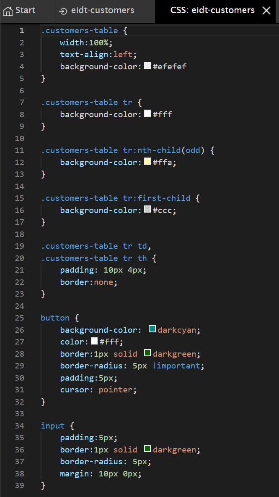
The result then looks roughly like this:
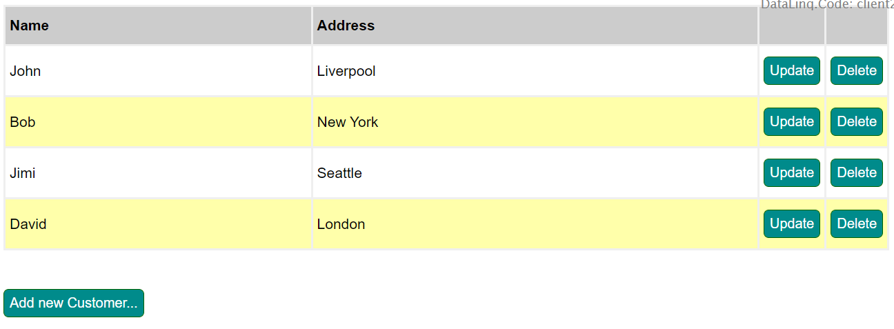
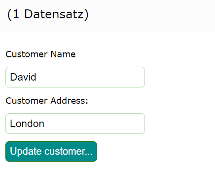